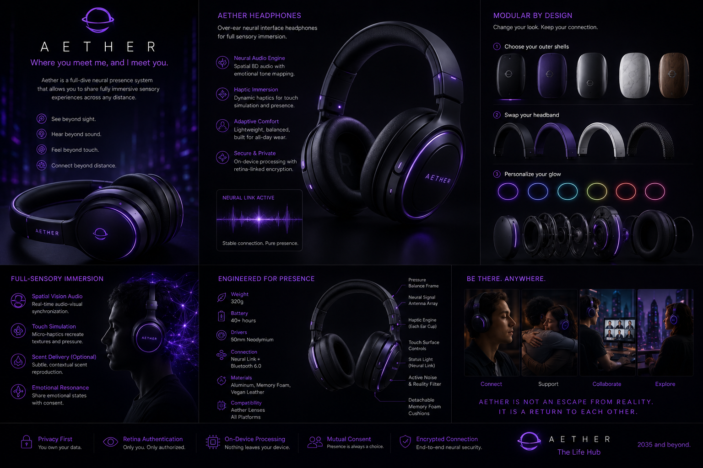
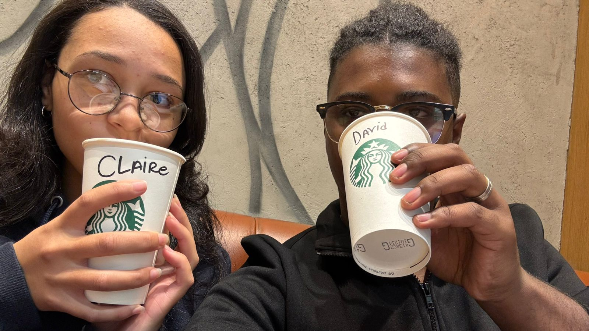
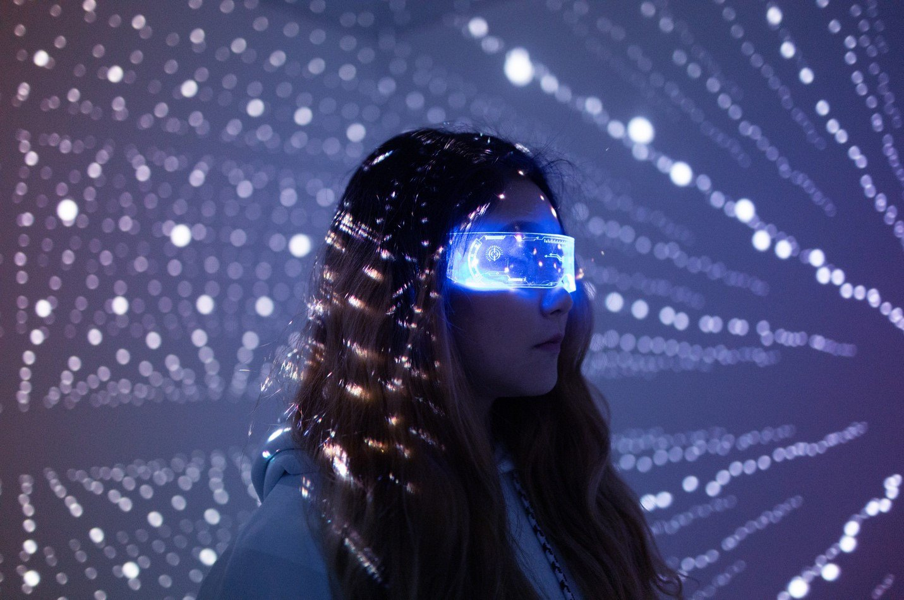
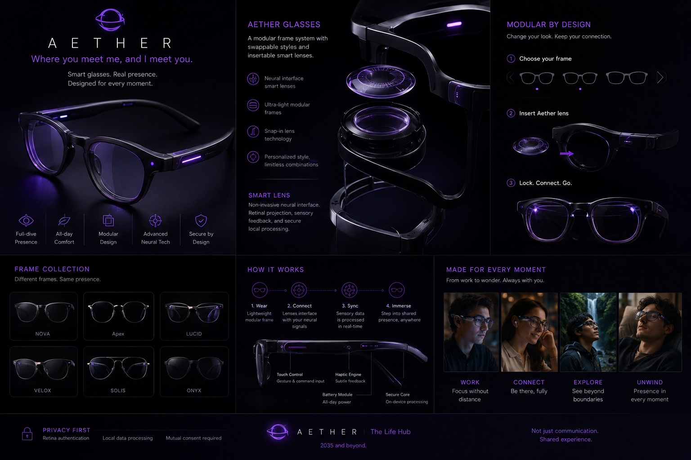
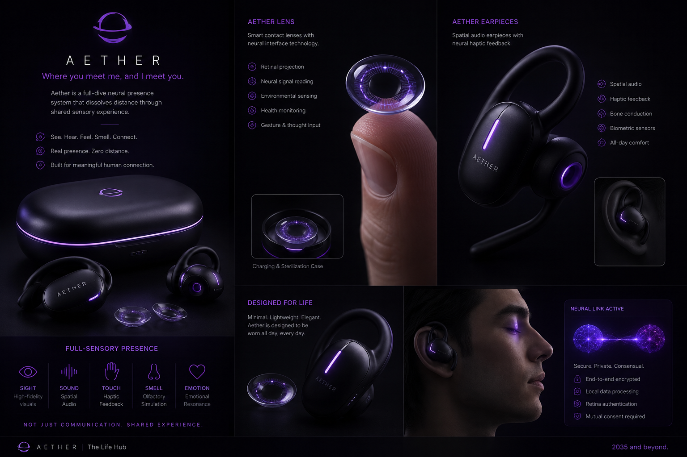

AETHER PROJECT
Presence Beyond Distance.
Aether is a speculative wearable neural presence ecosystem designed for emotional closeness, immersive communication, and sensory connection across any distance.

PERSONAL MOTIVATION
Built From Distance.
Aether emerged from the emotional realities of international life. Long-distance relationships, separated families, global friendships, and missed moments shaped the need for a technology that feels emotionally present rather than digitally disconnected.
Traditional communication tools allow people to speak and see each other, but they fail to recreate the feeling of presence itself. Aether attempts to bridge that emotional gap through immersive sensory communication.


THE PROBLEM
Connected Yet Isolated.
Globalization has made communication constant but emotional intimacy increasingly fragile. Families live across continents. Couples separate for education and work. Friendships fade through distance.
Aether challenges the limitations of flat digital communication by introducing emotional and sensory presence.

AETHER GLASSES
Smart neural glasses with retinal projection, environmental sensing, and immersive visual mapping.

AETHER EARPIECES
Spatial audio, haptic immersion, emotional resonance, and bone conduction communication.
AETHER HEADPHONES
Full sensory immersion with adaptive comfort, neural sound processing, and privacy-first architecture.
THEORETICAL FRAMEWORK
Media Ecology & Human Presence.
Marshall McLuhan argued that technologies become extensions of ourselves. Aether extends not only communication but the human sensory system itself. Instead of watching someone on a screen, users experience presence through sight, sound, touch, emotion, and environmental immersion.
Neil Postman warned that every technological innovation is a trade-off. While Aether may solve emotional distance, it simultaneously introduces ethical questions surrounding addiction, privacy, authenticity, surveillance, and reality.
MID-2030s
The World Aether Emerges In.
By the mid-2030s remote work has become normalized, climate-driven reductions in travel have reshaped global movement, and neural interfaces are lightweight, wearable, and socially integrated.
Aether enters this world not as entertainment alone, but as infrastructure for emotional connection.
ETHICS & RESPONSIBILITY
Designed Around Consent.
Every Aether session requires mutual consent. Neural data remains encrypted and locally processed. Retina authentication ensures identity integrity while emotional resonance systems remain entirely optional.
Aether acknowledges the risks of technological dependence, emotional escapism, and surveillance while attempting to build a healthier relationship between humanity and digital presence.
CONCLUSION
Technology Should Bring Us Back To Each Other.
Aether is not designed as an escape from reality. It is designed as a response to the emotional distress and exhaustion of modern life. In a world where people are constantly connected digitally yet increasingly disconnected emotionally, Aether imagines a future where presence itself becomes more meaningful, immersive, and human.
The project asks deeper philosophical questions about what it truly means to be present with another person. Is seeing someone enough? Is hearing their voice enough? Or does real connection require something more sensory, emotional, spatial, and embodied?
Through neural wearables, emotional resonance systems, spatial immersion, and sensory feedback, Aether attempts to reconstruct the missing layers of human closeness that have been flattened by screens and conventional communication.
At the same time, Aether recognizes that every technology changes humanity as much as humanity changes technology. Questions surrounding privacy, emotional dependence, surveillance, digital identity, and authenticity remain central to the project.
Ultimately, Aether imagines technology not as something cold and mechanical, but as something intimate and humane. A system capable of helping people support each other, grieve together, celebrate together, and remain emotionally close despite physical separation.